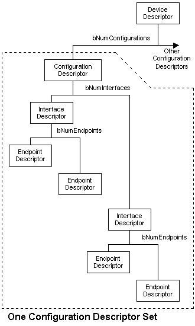

| Index |
| Part 1 |
| Part 2 |
| Part 3 |
| Part 4 |
| Part 5 |
| Part 6 |
| Part 7 |
| Links |
| Back |
Part 4 - Protocol |
|
|
|||||||||||||||||||||||||||||||||||||||||||||||||||||||||||||||||||||||||||||||||
Controlling a DeviceBefore we go into detail, we need to look at how the host recognises and installs a device when you plug it in. We need to do this in general terms without getting bogged down with the detail. When you plug a USB device in, the host becomes aware (because of the pullup resistor on one data line), that a device has been plugged in. |
|||||||||||||||||||||||||||||||||||||||||||||||||||||||||||||||||||||||||||||||||
|
The host now signals a USB Reset to the device, in order that it should start in a known state at the end of the reset. In this state the device responds to the default address 0. Until the device has been reset the host prevents data from being sent downstream from the port. It will only reset one device at a time, so there is no danger of two devices responding to address 0. The host will now send a request to endpoint 0 of device address 0 to find out its maximum packet size. It can discover this by using the Get Descriptor (Device) command. This request is one which the device must respond to even on address 0. Typically (i.e. with Windows) the host will now reset the device again. It then sends a Set Address request, with a unique address to the device at address 0. After the request is completed, the device assumes the new address. (And at this point the host is now free to reset other recently plugged-in devices.) Typically the host will now begin to quiz the device for as many details as it feels it needs. Some requests involved here are:
At the moment the device is in an addressed but unconfigured state, and is only allowed to respond to standard requests. Once the host feels it has a clear enough picture of what the device is, it will load a suitable device driver. The device driver will then select a configuration for the device, by sending a Set Configuration request to the device. The device is now in the configured state, and can start working as the device it was designed to be. From now on it may respond to device specific requests, in addition to the standard requests which it must continue to support. |
|||||||||||||||||||||||||||||||||||||||||||||||||||||||||||||||||||||||||||||||||
|
We can now see that there is a set of requests which a device must respond to, and need to look at the detailed means by which the requests are conveyed. We saw in the last chapter that data is transfered in 4 different types of transfer:
The only transfer type available before the device has been configured is the Control Transfer. The only endpoint available at this time is the bidirectional Endpoint 0. |
|||||||||||||||||||||||||||||||||||||||||||||||||||||||||||||||||||||||||||||||||
Configurations, Interfaces, and Endpoints.The device contains a number of descriptors (as shown to the right) which help to define what the device is capable of. We will examine these descriptors further down the page. For the moment we need to have an idea what the configurations, interfaces and endpoints are and how they fit together. A device can have more than one configuration, though only one at a time, and to change configuration the whole device would have to stop functioning. Different configurations might be used, for example, to specify different current requirements, as the current required is defined in the configuration descriptor. However it is not common to have more than one configuration. Windows standard drivers will always select the first configuration so there is not a lot of point. A device can have one or more interfaces. Each interface can have a number of endpoints and represents a functional unit belonging to a particular class. Each endpoint is a source or sink of data. For example a VOIP phone might have one audio class interface with 2 endpoints for transferring audio in each direction, plus a HID interface with a single IN interrupt endpoint, for a built in keypad. It is also possible to have alternative versions of an interface, and this is more common than multiple configurations. In the VOIP phone example, the audio class interface might offer an alternative with a different audio rate. It is possible to switch an interface to an alternate while the device remains configured.
|
 |
||||||||||||||||||||||||||||||||||||||||||||||||||||||||||||||||||||||||||||||||
|
|
|||||||||||||||||||||||||||||||||||||||||||||||||||||||||||||||||||||||||||||||||
The SETUP PacketThe Standard requests are all conveyed using control transfers to endpoint 0. Remember that a control transfer starts with a SETUP transaction which conveys 8 bytes. These 8 bytes define the request from the host. The structure of bmRequestType makes it easy to use it to switch on when your firmware is trying to interpret the setup request. Essentially, when the SETUP arrives, you need to branch to the handler for the particular request, so for example bits 6:5 allow you to distinguish the mandatory standard commands, from any class or vendor commands you may have implemeted for you particular device. Switching on bit 7 allows you to deal with IN and OUT direction requests in separate areas of the code. |
The meaning of the 8 bytes of the SETUP transaction data, which are divided into five named fields. |
||||||||||||||||||||||||||||||||||||||||||||||||||||||||||||||||||||||||||||||||
|
|
|||||||||||||||||||||||||||||||||||||||||||||||||||||||||||||||||||||||||||||||||
|
Here is a table which contains all the standard requests which a host can send. The first 5 columns are the SETUP transaction fields in order, and the last column describes any accompanying data stage data which will have the length wLength.
|
|||||||||||||||||||||||||||||||||||||||||||||||||||||||||||||||||||||||||||||||||
GET_DESCRIPTORIt is probable that this request (with the descriptor type set to Device) will be the first that will be received after USB reset. The host needs to know the max packet length in use by the control endpoint and this information is available in the 8th byte of the device descriptor. Typically when the host is Windows, the device will receive the request with the required length wLength set to 64. The host will then input 1 packet, and then reset the device again. Whatever the value of the max packet length, the host now has the value of the 8th byte and knows what the packet size is for all future control transfers. The second reset is probably to guarantee that the device does not get confused after not being allowed to complete the transmission of all 18 bytes of the device descriptor. |
Table of wValues use in Get Descriptor requests to select the required descriptor. |
||||||||||||||||||||||||||||||||||||||||||||||||||||||||||||||||||||||||||||||||
Device DescriptorThis descriptor will most likely be the first one fetched by the host. We should point out some important features. bLength and bDescriptorTypeAll descriptors start with a single byte specifying the descriptor's length, and this is always followed by a single byte defining the descriptor type. bcdUSBThe only valid version numbers are 0x0100 (USB1.0), 0x0110 (USB1.1) and 0x0200 (USB2.0). If you design a new device it should be identified as USB2.0 because that is the current specification. bDeviceClass, bDeviceSubClass and bDeviceProtocolThis triplet of values is used to describe the class of the device in various ways as defined in the various class specification documents from the USB-IF. idVendor, idProduct and bcdDeviceThe combination of idVendor and idProduct (also known as the VID and PID) must be unique for the device. This means that the VID you use must be one issued by the USB-IF and which you have the right to use. You can either buy a VID from the USB-IF, or you may be able to acquire the right to use a VID from another manufacturer together with a particular PID which they have issued to you. If you use a VID/PID combination which is already in use then you will probably have major problems with your product in the field. |
Device Descriptor |
||||||||||||||||||||||||||||||||||||||||||||||||||||||||||||||||||||||||||||||||
SET_ADDRESSAfter the host has determined the max packet size for endpoint 0, it is in a position to begin normal communications with the device. As mentioned above, there may be a second reset from the host. The host now needs to issue a SET_ADDRESS request to the device, so that each device on the bus has a unique address to respond to. SET_ADDRESS is a simple, outward direction request in a control transfer with no data stage. The only useful information carried in the SETUP packet is the required address. When implementing this request in firmware, you should note the following. All other requests must be actioned before the status stage in completed. But in the case of SET_ADDRESS, you should not change the device address until after the status stage. The status stage will not succeed unless the device is still responding to address 0 while it is taking place. The device then has 2ms to get ready to respond to the new address. |
|
||||||||||||||||||||||||||||||||||||||||||||||||||||||||||||||||||||||||||||||||
Other Information Gathering CommandsThe host is likely to start using the GET_DESCRIPTOR request mentioned above, to fetch other information describing the device. A major piece of this information is the configuration descriptor. |
|
||||||||||||||||||||||||||||||||||||||||||||||||||||||||||||||||||||||||||||||||
Get Descriptor (Configuration)The Get Descriptor (Configuration) warrants special explanation, because the request results in not just a Configuration Descriptor being returned, but also some or all of a number of other descriptors:
A Get Configuration Descriptor fetches the descriptors for just one configuration depending on the descriptor index in wValue of the SETUP packet. Most devices only have one configuration, because built-in Windows drivers always select the first configuration. The diagram opposite shows a typical set of Descriptors which is fetched. It starts with the configuration descriptor, and the vertical position shows the correct sequence, with the interfaces being dealt with in turn, each one followed by its own endpoints. The position of class descriptors is defined in the appropriate class specification, and of course vendors descriptor positions would be up to the vendor concerned. An OTG descriptor position is not defined but typically appears immediately after the configuration descriptor. |
|||||||||||||||||||||||||||||||||||||||||||||||||||||||||||||||||||||||||||||||||
Configuration DescriptorThe configuration descriptor format is shown to the right. The wTotalLegth value is important because it tells the host how many bytes are contained in this descriptor and all the descriptors which follow. bNumInterfaces describes how many interfaces this configuration supports. |
Configuration Descriptor |
||||||||||||||||||||||||||||||||||||||||||||||||||||||||||||||||||||||||||||||||
Interface DescriptorThe interface descriptor format is shown to the right. bAlternateSetting needs some explanation. An interface can have more than one variant, and these variants can be switched between, while other interfaces are still in operation. For the first (and default) alternative bAlternateSetting is always 0. To have a second interface variant, the default interface descriptor would be followed by its endpoint descriptors, which would then be followed by the alternative interface descriptor and then its endpoint descriptors. bInterfaceClass, bInterfaceSubClass and bInterfaceProtocolBy defining the class, subclass and protocol in the interface, it is possible to have interfaces with different classes in the same device. This is referred to as a composite device.
|
Interface Descriptor |
||||||||||||||||||||||||||||||||||||||||||||||||||||||||||||||||||||||||||||||||
Endpoint DescriptorThe endpoint descriptor format is shown to the right. |
Endpoint Descriptor |
||||||||||||||||||||||||||||||||||||||||||||||||||||||||||||||||||||||||||||||||
Get Descriptor (String)There are several strings which a host may request. The strings defined in the device descriptor are:
These strings are optional. If not supported, the corresponding index in the device descriptor will be 0. Otherwise the host may use the specified index in a Get Descriptor (String) request to fetch the descriptor. Get Descriptor (String), with a descriptor index of 0 in the low byte of wValue, is used to fetch a special string language descriptor. This contains a series of 2-byte sized language specifiers. In theory, if the language of your choice is supported in this list, you can use the index to this language ID to access the string descriptors in this language by specifying this in wIndex of the Get Descriptor (String) request. In practise, with Windows, you will have difficulties if you do not ensure that the first language specified is English (US). |
String
Descriptor Zero
String Descriptor |
||||||||||||||||||||||||||||||||||||||||||||||||||||||||||||||||||||||||||||||||
SET_CONFIGURATIONWhen the host has got all the information it requires it loads a driver for the device based on the VID/PID combination in the device descriptor, or on the standard class defined there or in an interface descriptor. The driver may also ask for the same or different information using Get Descriptor requests. Eventually it will decide to configure the device using the SET_CONFIGURATION request. Usually ( when there is one configuration) the Set Configuration request will have wValue set to 1, which will select the first configuration. Set Configuration can also be used, with wValue set to 0, to deconfigure the device. |
|
||||||||||||||||||||||||||||||||||||||||||||||||||||||||||||||||||||||||||||||||
GET_CONFIGURATIONThis request compliments Set Configuration, and simply allows the host to determine which configuration it previously set. |
|||||||||||||||||||||||||||||||||||||||||||||||||||||||||||||||||||||||||||||||||
SET_FEATURE
|
Table of wValues used in Set Feature and Clear Feature requests. |
||||||||||||||||||||||||||||||||||||||||||||||||||||||||||||||||||||||||||||||||
GET_STATUSThis request is used to fetch status bits from a device, an interface or an endpoint. In each case the request fetches 16 bits (2 bytes). The tables to the right show the status bits which are currently implemented. Note that Remote Wakeup and Halt status bits can both be controlled by the host using Set.Clear Feature requests, but the Self-powered bit is only controlled by the device. |
Device Status Bits
Interface Status Bits
Endpoint Status Bits |
||||||||||||||||||||||||||||||||||||||||||||||||||||||||||||||||||||||||||||||||
SET_INTERFACE
|
|||||||||||||||||||||||||||||||||||||||||||||||||||||||||||||||||||||||||||||||||
SYNCH_FRAMEThis is used with some isochronous transfer where the transfer size varies with the frame. See USB 2.0 specification for more details. |
|||||||||||||||||||||||||||||||||||||||||||||||||||||||||||||||||||||||||||||||||
SET_DESCRIPTORThis Standard request is optional and not often used. It allows the host to specify a new set of values for a given descriptor. It is hard to imagine when this might be of value. |
|||||||||||||||||||||||||||||||||||||||||||||||||||||||||||||||||||||||||||||||||
SummaryWe have looked at the set of standard requests which a device must support to become operational. |
|||||||||||||||||||||||||||||||||||||||||||||||||||||||||||||||||||||||||||||||||
Coming up...Next we will examine the complete enumeration and start of operation of a specific device. |
Forward | ||||||||||||||||||||||||||||||||||||||||||||||||||||||||||||||||||||||||||||||||
|
Copyright
© 2006-2008 MQP Electronics Ltd
|
|||||||||||||||||||||||||||||||||||||||||||||||||||||||||||||||||||||||||||||||||